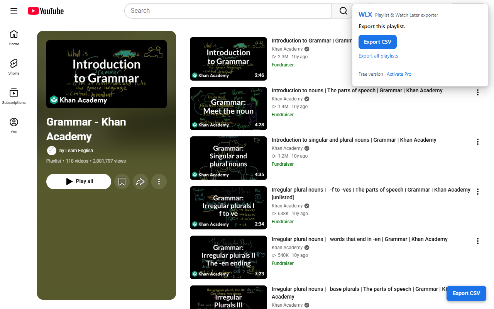

Exporte o Assistir mais tarde do YouTube para uma planilha
O YouTube não tem botão para exportar o Assistir mais tarde, e a API oficial dele devolve essa lista vazia. O WLX é uma extensão para o Firefox e o Microsoft Edge que salva o seu Assistir mais tarde e qualquer playlist num arquivo CSV, com um clique: título, canal, duração e link de cada vídeo.
Grátis, para o Firefox e o Edge no computador. Sem conta, sem cadastro, sem servidor.

Como exportar o Assistir mais tarde
Leva menos de um minuto, mesmo com milhares de vídeos. Você não precisa rolar a lista.
-
Instale o WLX
É grátis na loja do Firefox e na loja do Microsoft Edge.

-
Abra a lista no YouTube
Vá ao seu Assistir mais tarde (com login) ou a qualquer playlist e clique em Exportar CSV, no canto inferior direito.

-
Abra o arquivo
O CSV vai para a sua pasta Downloads. Ele abre no Excel, no Google Planilhas ou no LibreOffice, com os acentos certos.

Por que usar o WLX
A sua lista num arquivo que fica com você
Centenas de vídeos salvos viram uma planilha que você pode ordenar, pesquisar, compartilhar ou guardar como backup.
Vídeos apagados e privados também
Os vídeos indisponíveis entram no arquivo marcados, para você ver o que falta, em vez de um buraco sem aviso.
"O que sumiu?"
Exporte de novo mais tarde e o WLX avisa quais vídeos ficaram indisponíveis desde a última vez. O Pro mostra o título e o canal que eles tinham.
Backup de todas as playlists
Na sua página "Playlists" do YouTube, o Exportar todas salva as suas playlists num único arquivo .zip.
Grátis e Pro
A versão grátis não tem prazo para acabar. O Pro é um pagamento único, sem assinatura.
Grátis
US$ 0
- Playlists e vídeos curtidos: até 50 vídeos cada, em CSV
- Assistir mais tarde: uma amostra dos 10 primeiros vídeos
- Backup: as 3 primeiras playlists
- "O que sumiu?": quantos vídeos ficaram indisponíveis
WLX Pro
US$ 5 pagamento único
- Sem limite: playlists completas e todo o Assistir mais tarde
- Markdown e JSON, além do CSV
- Uma coluna de status (disponível, indisponível)
- "O que sumiu?" com o título e o canal que o vídeo tinha antes
- Backup de todas as suas playlists
- Uma chave vale para até 3 navegadores
O Pro é vendido na Gumroad, que mostra o valor convertido para reais. Reembolso em até 14 dias se não funcionar para você.
Perguntas
O WLX baixa vídeos?
Não. O WLX não baixa vídeos nem músicas e não mexe em anúncios. Ele só exporta a lista: título, canal, duração, link e disponibilidade.
Preciso fazer login ou criar uma conta?
Não existe conta do WLX. Ele usa a sessão do YouTube que já está aberta no seu navegador, então você só precisa estar logado no YouTube para exportar o Assistir mais tarde e os vídeos curtidos. Playlists públicas funcionam sem login.
Meus dados são enviados para algum lugar?
Não. O arquivo é criado no seu navegador e salvo no seu computador. A única coisa enviada é a sua chave de licença, para a Gumroad, se você ativar o Pro. Veja a política de privacidade.
E o Google Takeout?
O Takeout exporta os seus dados do Google de uma vez, e o arquivo pode demorar para ficar pronto. O WLX exporta a lista que você está vendo, na hora, direto para uma planilha.
Quanto tempo leva?
Mais ou menos um segundo a cada 100 vídeos. Uma lista de 5.000 vídeos leva menos de um minuto, com o andamento na tela e um botão Parar.
Em quais navegadores funciona?
No Firefox (versão 140 ou mais nova) e no Microsoft Edge, no computador. Não funciona no celular.
Como ativo o Pro?
- Compre o WLX Pro na Gumroad. A chave de licença chega logo depois do pagamento.
- Clique no ícone do WLX na barra do navegador e depois em Ativar Pro.
- Cole a chave e clique em Ativar. No Firefox, aparece um pedido de permissão para enviar a chave à Gumroad: clique em Permitir.
Por que só aparecem 5.000 vídeos curtidos?
O próprio YouTube só mostra e só conta os 5.000 vídeos curtidos mais recentes. O WLX avisa quando uma lista chega a esse número.
Suporte
Algo não funcionou, ou a chave não ativa? Escreva para wlx.exporter@gmail.com. Conte o link da playlist (se for pública) e o que aparece na tela.
Se o botão não aparecer no YouTube, abra about:addons no Firefox, clique no WLX, abra Permissões e confira se o acesso a www.youtube.com está ligado. No Edge, abra edge://extensions, clique em Detalhes no WLX e confira o Acesso ao site. Depois recarregue a página do YouTube.
Política de privacidade
Atualizada em 14 de novembro de 2026
O que o WLX lê
Quando você clica para exportar, o WLX lê a lista de vídeos da playlist do YouTube que você abriu (título, canal, duração, link e disponibilidade), usando a sessão do YouTube que já está aberta no seu navegador. Ele não lê mais nada.
Para onde vão os seus dados
O arquivo exportado é criado no seu navegador e salvo no seu computador. O WLX não tem servidor e não recebe as suas playlists.
O que fica guardado no seu computador
- Para o "O que sumiu?": uma lista resumida dos vídeos que você exportou de cada playlist (ID do vídeo, título, canal e data), para o WLX saber depois o que ficou indisponível.
- Se você ativar o Pro: a sua chave de licença e a data da última conferência.
Isso fica no armazenamento da extensão, no seu computador, e é apagado quando você remove a extensão.
O que é enviado a outros
Só a sua chave de licença, e só se você ativar o Pro: ela vai para a Gumroad (api.gumroad.com), a loja que vende a licença, quando você ativa e mais ou menos uma vez por dia enquanto usa o WLX, para conferir se ela continua valendo. No Firefox, o navegador pede a sua permissão antes da primeira vez. A resposta da Gumroad traz dados da compra; o WLX guarda só se a chave vale. Veja a política de privacidade da Gumroad.
O que o WLX nunca faz
Sem estatísticas de uso, sem rastreamento, sem anúncios, e sem vender ou compartilhar dados. Esta página também não tem cookies nem rastreadores.